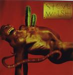

| Artist: | Steve Walsh |
| Title: | Glossolalia |
| Label: | Magna Carta MAX-9043-2 |
| Length(s): | 60 minutes |
| Year(s) of release: | 2000 |
| Month of review: | [01/2001] |
| 1) | Glossolalia | 5.31 |
| 2) | Serious Wreckage | 6.03 |
| 3) | Heart Attack | 4.15 |
| 4) | Kansas | 8.54 |
| 5) | Nothing | 3.09 |
| 6) | Haunted Man | 5.38 |
| 7) | Smackin' The Clown | 10.04 |
| 8) | That's What Love Is All About | 5.13 |
| 9) | Mascara Tears | 7.05 |
| 10) | Rebecca | 5.15 |